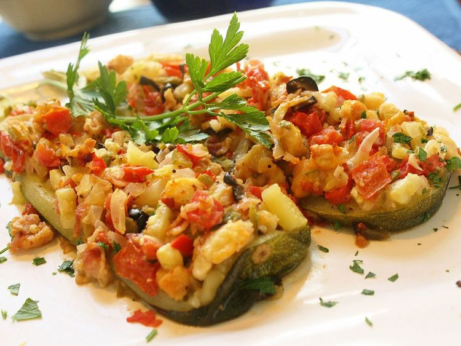

Zucchini Boats on the Grill

Colourful Grilled Zucchini Boats ready to be devoured!
Delicious zucchini stuffed with your favorite ingredients and finished on the hot grill. Grilled zucchini boats make a great side dish or light meal
Ingredients
- Medium Zucchini (2)
- Slice of white bread, torn into small pieces (1)
- Minced jalapeno pepper (1)
- Shredded sharp Cheddar cheese (6 tablespoons)
- Bacon bits (1/4 cup)
- Minced onion (1/4 cup)
- Chopped tomato (1/4)
- Diced green chili peppers (3 tablespoons)
- minced black olives (1 tablespoon)
- Dried basil (1 pinch)
- Seasoned salt
- Ground black pepper
Directions
- Prepare the grill for indirect medium heat.
- Place zucchini in a large pot with enough water to cover. Bring to a boil and cook for 5 minutes. Drain, cool, and cut in half lengthwise. Scoop out pulp to about 1/4 inch from the skin. Chop pulp into small pieces.
- Mix zucchini pulp, bread pieces, jalapeño, Cheddar cheese, bacon bits, onion, tomato, chile peppers, and olives in a large bowl until combined. Season with basil, seasoned salt, and pepper; mix well.
- Stuff zucchini halves with pulp mixture. Wrap each zucchini boat with aluminum foil.
- Place wrapped zucchini boats on the prepared grill over indirect heat and cook until tender, 15 to 20 minutes.